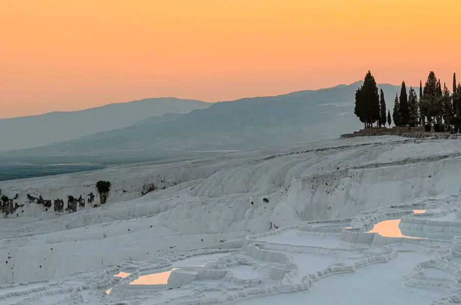
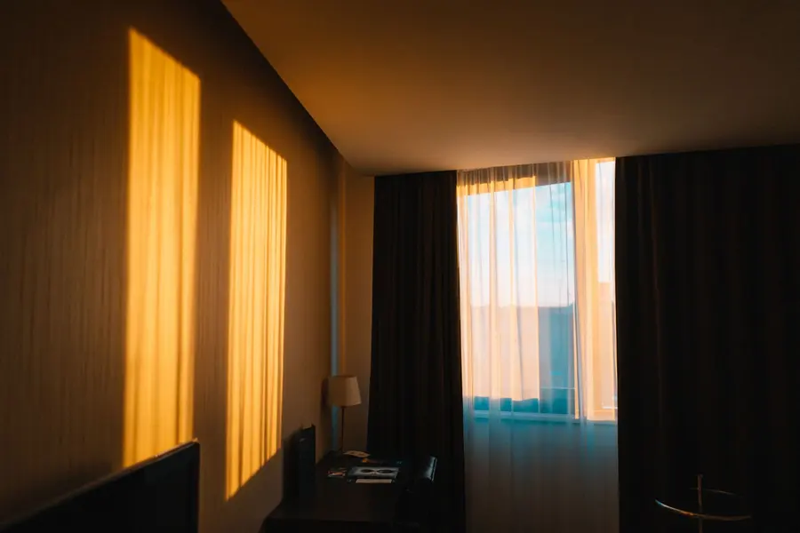
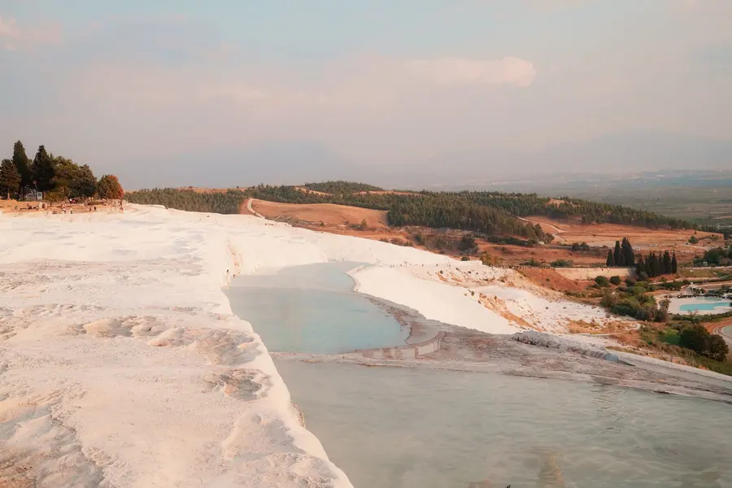

Boutique otel · Pamukkale
Pamukkale'de, evinizdeymiş gibi.
Sirius Boutique Otel, Pamukkale'de, Menderes Caddesi'nde. Oda için arayın ya da WhatsApp'tan yazın.
Feels just like home.

Fotoğraf temsilîdir

Fotoğraflar temsilîdir; yayında otelin kendi avlusu ve odaları görünür.
Otel
Gecenin en parlak yıldızı, Sirius.
Sirius, gece gökyüzünün en parlak yıldızının adı. Pamukkale'deki otelin ışığı da böyle olsun istiyoruz: misafir kapıdan girdiğinde hemen rahat etsin.
10 yaş altı çocuk kabul edilememektedir
Odalar ve olanaklar (örnek yer). Oda tipleri, kahvaltı ve benzeri olanaklar yayında sizden alınarak bu bölüme yazılır; burada bilmediğimiz hiçbir şeyi yazmıyoruz.
Pamukkale'de ne var


Gün boyu dört durak.
Pamukkale travertenleri ve Hierapolis antik kenti birlikte UNESCO Dünya Mirası Listesi'nde. Konaklamanızı bu rotaya göre kurabilirsiniz.
01
Travertenler
Kalker teraslar ve içlerinde toplanan açık renkli havuzlar.
02
Hierapolis
Antik tiyatro, sütunlu yollar ve geniş bir antik kent.
03
Gün batımı
Travertenler ve antik kent, ışığın en yumuşak olduğu saatte.

04
Gökyüzü
Pamukkale üzerinde sıcak hava balonu turları yapılır.
İletişim
Yazın, yer ayıralım.
Hangi tarihlerde, kaç kişi; mesajınız yeter.
Menderes Caddesi, Pamukkale/Denizli · @siriusotelpamukkale